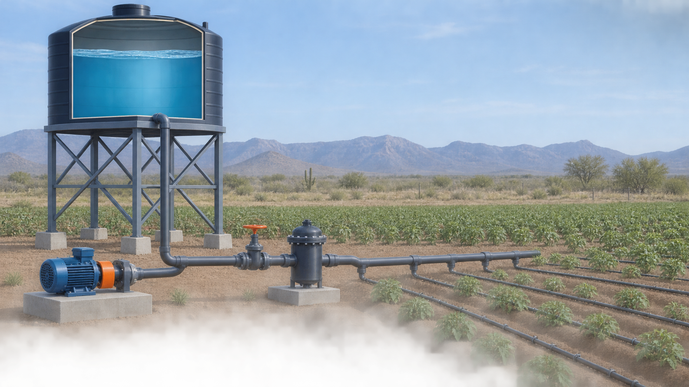
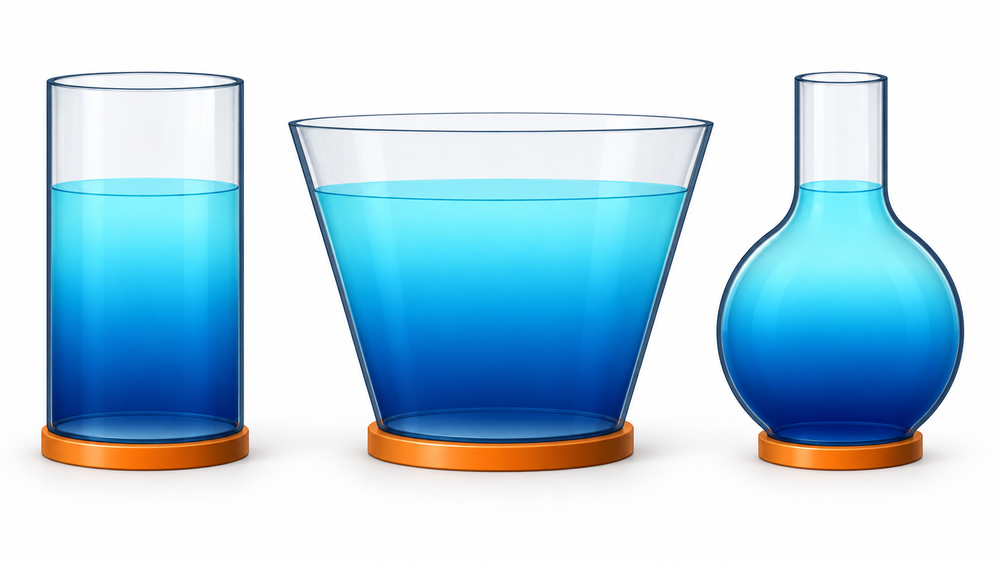
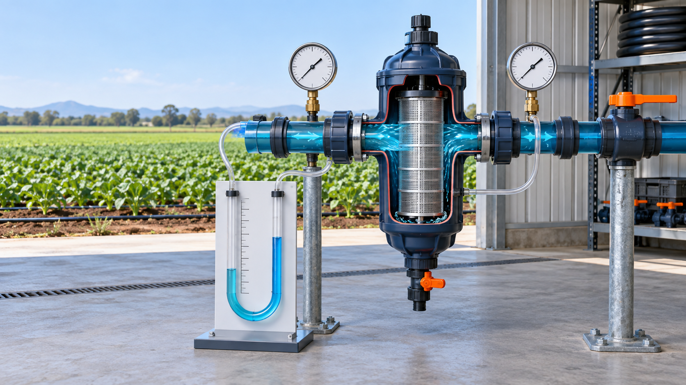
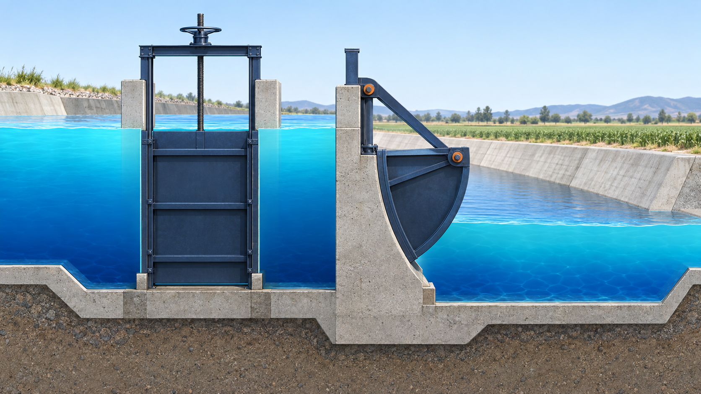

Tema 1.1
¿Qué estudia la hidrostática?
Diferencia masa, peso, densidad, peso específico y presión; comprende de dónde provienen sus ecuaciones y las aplica a depósitos y soluciones agrícolas.
Hidráulica aplicada a la Agronomía
Comprende cómo se comporta el agua en reposo y aplica presión, medición y fuerzas hidrostáticas al almacenamiento, filtrado y conducción del agua en sistemas agrícolas.
Edición ampliada 2026. Cada tema inicia con una situación agrícola, explica el fenómeno mediante esquemas, deriva las ecuaciones paso a paso con sus unidades y cierra con ejemplos, ejercicios e interpretación agronómica.

Diferencia masa, peso, densidad, peso específico y presión; comprende de dónde provienen sus ecuaciones y las aplica a depósitos y soluciones agrícolas.

Deriva la ecuación hidrostática mediante equilibrio, relaciona profundidad, elevación y carga, y analiza tanques y conducciones.

Deriva el piezómetro y el manómetro diferencial, recorre columnas por tramos y evalúa presión e incertidumbre en filtros de riego.

Integra la presión sobre compuertas rectangulares, localiza el centro de presión y calcula momentos con aplicación a canales agrícolas.